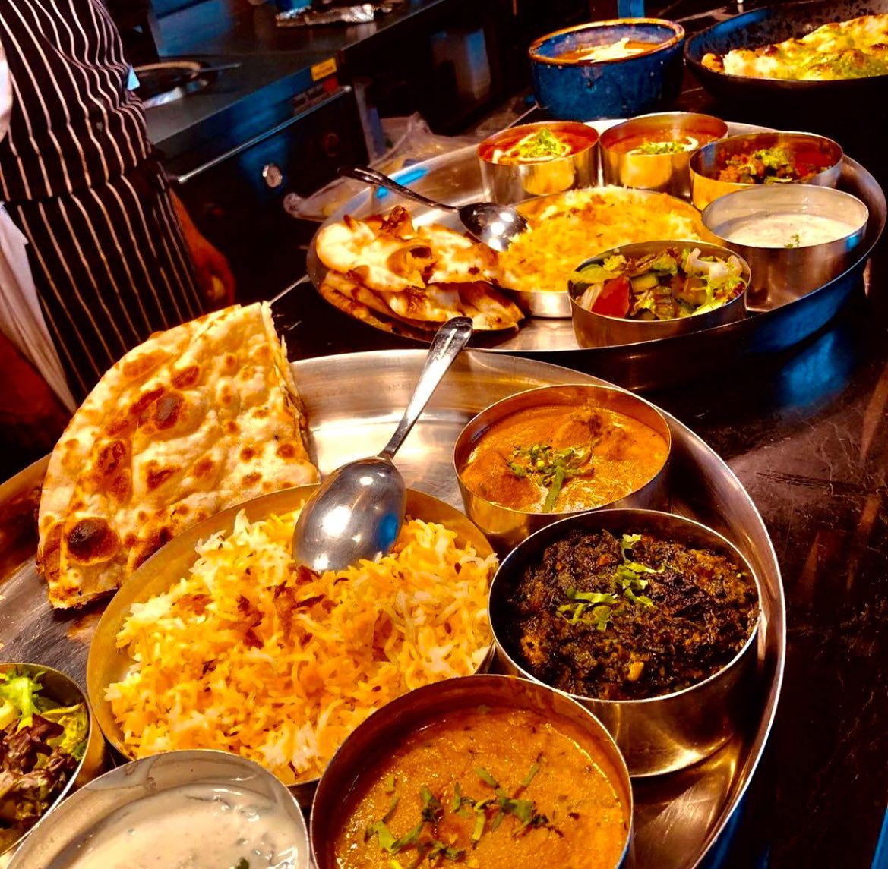
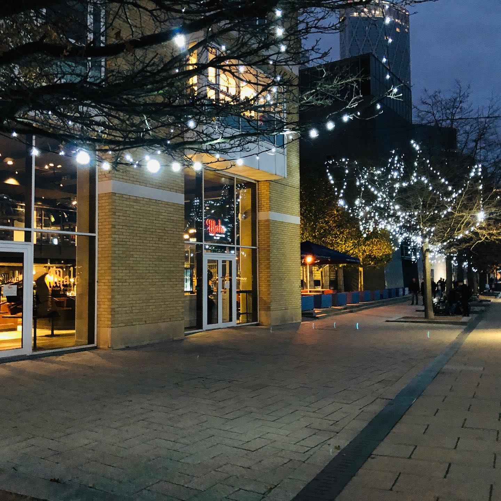
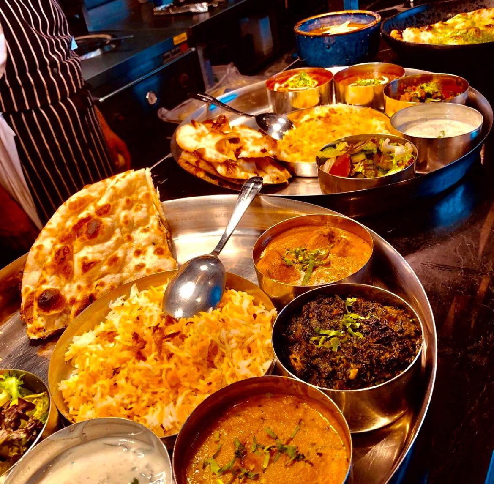
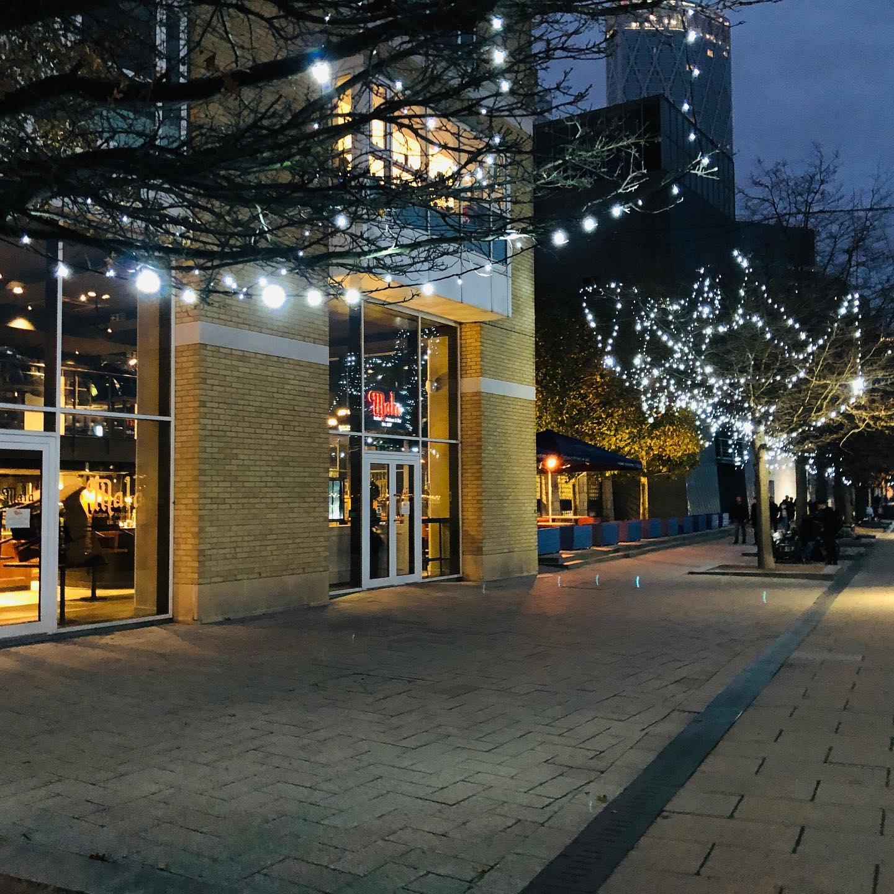
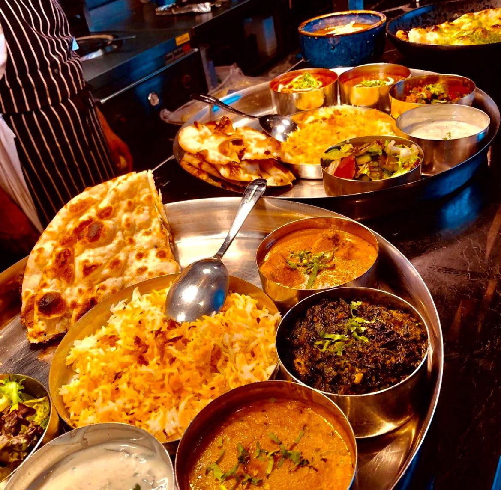
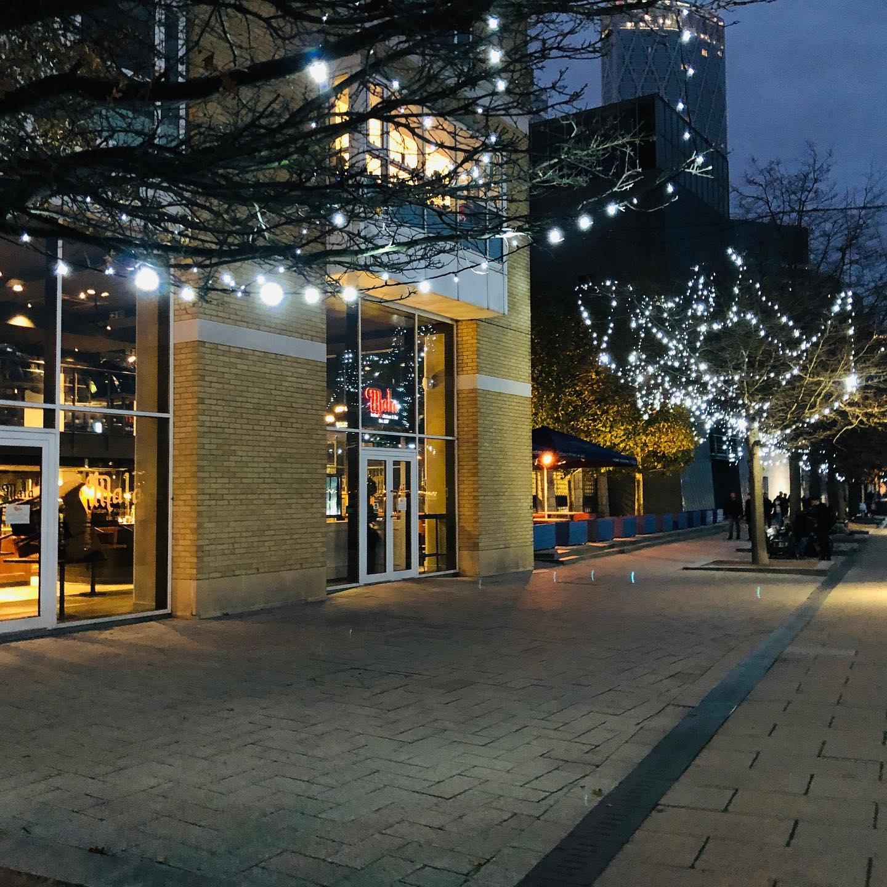

Mala Indian Kitchen and Bar is a popular restaurant located just outside Canary Wharf, London. This restaurant offers a unique dining experience with a fusion of modern and traditional Indian cuisine. The restaurant has an elegant ambiance with a stylish interior and modern decor. They serve a wide variety of dishes, from authentic Indian curries to contemporary fusion cuisine. Indian Kitchen and Bar is also known for its extensive drink menu that includes an array of cocktails, wine, and beer. With excellent food, drinks, and service, Indian Kitchen and Bar is a must-visit restaurant for anyone looking to indulge in the flavors of India in a modern and stylish setting.

